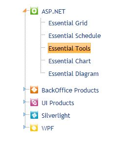

Keyboard Navigation Support for TreeView
The Keyboard Navigation support for TreeView breathes life into the concept of selecting, expanding, editing, collapsing nodes and moving from one node to another using keyboard keys.
Use Case Scenarios
The use case scenarios for Keyboard Navigation support are:
1. The user can easily navigate from one node to another node using the Keyboard.
2. The user can also add new node by using Keyboard keys.
Keyboard Navigation Application
Using Builder
The following steps explain how to define TreeView’s Keyboard Navigation, using Builder.
1. In View, create an ul-li hierarchy of tree-view nodes.
Note: An ul-li is related to an unordered list.
2. Invoke the TreeView helper with the control ID as first argument and the tree-view content ID as the second argument.
3. The Properties and Events used for Keyboard Navigation in TreeView are shown below.
|
View[ASPX] <%=Html.Syncfusion().TreeView("MyTreeView", "treeViewContents") .AllowKeyboardNavigation(true) .ClientSideKeyPress("ClientSideKeyPress")
%> |
|
View[cshtml] @{ Html.Syncfusion().TreeView("MyTreeView", "treeViewContents") .AllowKeyboardNavigation(true) .ClientSideKeyPress("ClientSideKeyPress").Render(); } |
4. In the Controller, navigate to the View page.
|
[C#] public ActionResult Index() {
return View(); } |
5. Build and run the application, and the TreeView appears as shown below:

Figure 321: Keyboard Navigation supported TreeView
Using Properties Model
The following steps tell you how to define the Keyboard Navigation in TreeView, through the properties model.
1. Under View, create an ul-li hierarchy of tree-view nodes.
2. Invoke the TreeView helper with the control ID as first argument and the tree-view content ID as the second argument.
|
View[ASPX] <%=Html.Syncfusion().TreeView("MyTreeView", "TreeView", (TreeViewModel)ViewData["TreeViewModel"])%>
|
|
View[cshtml]
@(new HtmlString(Html.Syncfusion().TreeView("MyTreeView", "TreeView", (TreeViewModel)ViewData["TreeViewModel"]).ToString()))
|
3. Define the ClientSideKeypress Event, using the view-specific data. This way, you will be able to view using the Tree View’s controller.
|
[C#] public ActionResult Index(string SourceType, TreeViewModel treeviewModel) { TreeViewModel treeview = new TreeViewModel(); treeview. AllowKeyboardNavigation = true; ViewData["TreeViewModel"]=treeview; return View(); }
|
4. Build and run the application, and the TreeView will appear as shown below:
Figure 322: Keyboard Navigation supported TreeView
Properties
|
Property |
Description |
Type |
Data Type |
Reference links |
|
AllowKeyboardNavigation |
Used to enable KeyboardNavigation |
Server-Side |
Boolean |
NA |
Events
|
Event |
Description |
Arguments |
Type |
Reference links |
|
ClientSideKeypress |
This event is raised when you press any key |
keyPressHandler
|
Client-Side |
NA |
Key Configuration Table
Tabulated below, are all the key configurations needed for TreeView Navigation:
|
Action |
Default Keys |
|
Delete Node |
Delete |
|
Cut Node |
Ctrl + X |
|
Copy Node |
Ctrl + C |
|
Paste Node |
Ctrl + V |
|
Select Node |
Enter |
|
Next Node |
DownArrowKey |
|
Previous Node |
UpArrowKey |
|
Expand Node |
RightArrowKey |
|
Collapse Node |
LeftArrowKey |
|
First Node |
Home |
|
Last Node |
End |
|
First Child |
Ctrl + Home |
|
Last Child |
Ctrl + End |
|
Focus |
Shift + F |
Sample Link
To view the samples, follow the steps below:
1. Open the Grid sample browser from the dashboard. (Refer to the Samples and Location chapter)
2. Navigate to Tools.MVC --> TreeView